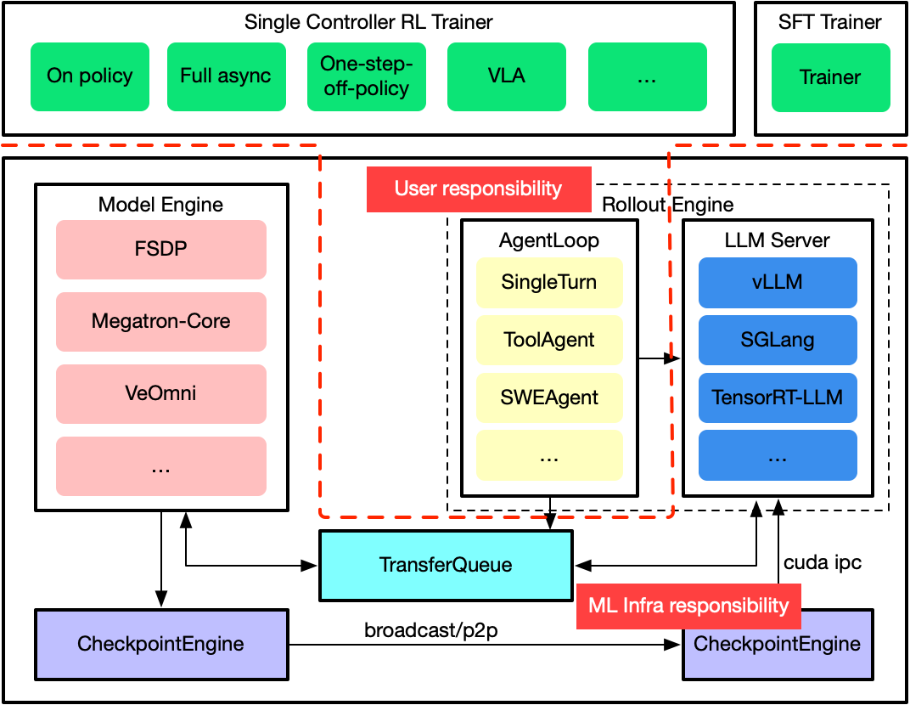
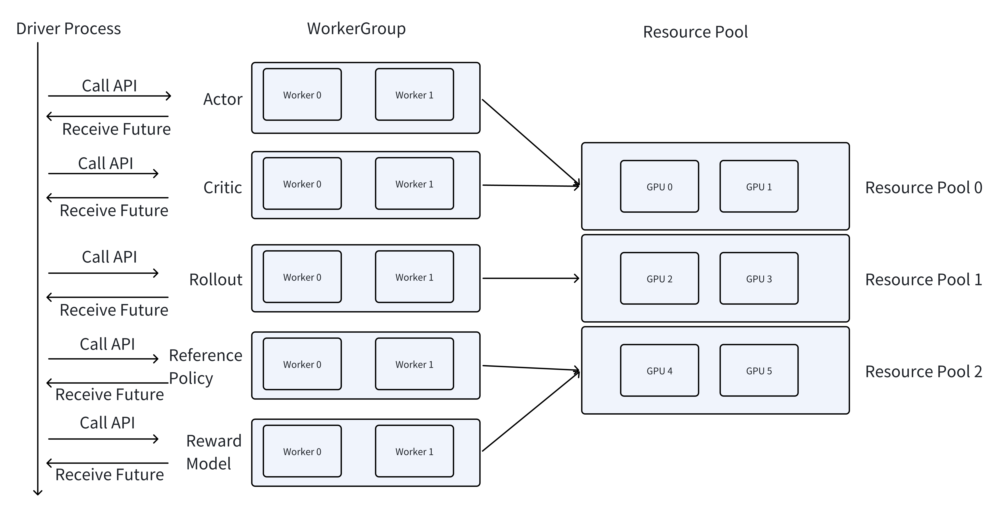

00全景与读法
verl 的"事实标准"地位不是单一指标的结果，而是四组事实的叠加：规模与治理（23.2k stars、Apache-2.0、组织迁移至 verl-project 实现社区中立化）、头部采用（字节 Seed、阿里 Qwen、LMSys）、衍生生态（50+ 社区衍生）、看板出镜率（D09 到 D23 每一次框架名单在列）。其技术根基是 HybridFlow（arXiv 2409.19256）的 hybrid-controller 编程模型：控制流集中表达、计算流分布执行。v0.9.0（2026-08-14）落地 DeepSeek-V4 GRPO 端到端、delta sharded checkpoint engine（较全量 NCCL broadcast 提速 2.4×）与 V1 PPO trainer；TIS 进主干把 D27 的 IS 修正派框架化。昇腾侧：独立文档体系、模型支持到 DeepSeek-V3 671B、六种并行齐备——在 MindSpeed-RL 谢幕（D32）后，verl-Ascend 成为昇腾 RL 的社区主线。
每一节固定三段：朴素基线（左栏，灰：不看论文、按直觉会怎么实现）/ 它的做法（右栏，橙：verl 实际怎么做）/ 差在哪（下方色块：差异、原文是否给了理由、对 RL-on-NPU 的含义）。数字按来源分三类标注：第三方 独立测量、社区公开脚本或多方一致；自报 仓库 README、release notes 与论文作者口径；推断 本站分析。原文的 provisional 声明适用于全文：stars、提速倍数、吞吐增益、模型支持列表以写作当日仓库与 release notes 为准，快速演进中随时可能过时。
一条贯穿全文的线索：把 RL 后训练定义为多模型数据流而非训练循环。这一定义解释了 verl 的算法面为何能快速扩张、后端矩阵为何能正交扩张、衍生项目为何选择加层而非 fork——也解释了昇腾适配为何可以作为"硬件维度"的一个取值进入矩阵而不触碰算法层。
01事实标准的形成：四组事实构成证据链
verl 的"事实标准"地位由四组事实支撑，任何一组单独看都不充分，合在一起构成完整证据链。规模与治理：23.2k stars，Apache-2.0；更关键的是 2026 年从 volcengine 迁移至独立的 verl-project 组织（volcengine/verl 重定向），治理层面完成社区中立化——这与 vLLM/PyTorch 等基础设施项目的路径一致：单厂商孵化、中立组织托管，是"事实标准"从社区认知固化为治理结构的标志。头部采用：字节 Seed、阿里 Qwen、LMSys 均为直接用户；训出的模型包括 Seed-Thinking-1.5、Doubao-1.5-pro、Skywork-OR1——采用方横跨大厂旗舰与开源推理模型。衍生生态：50+ 社区衍生项目：rLLM（D22，可插拔后端含 verl）、SkyRL-Agent（D18，与 verl 互操作）、verl-agent 的 GiGPO、verl-tool（D12）等；官方系新增 verl-vla v0.1.0（VLA 后训练）、VeRL-Tinker、VeRL-Omni v0.2.0。看板出镜率：本看板从 D09 到 D23 的每一次框架名单，verl 都在：D09"只有 Megatron 系能正确做 EP"名单在列；D12 衍生生态；D18 互操作对象；D19 slime 生态位表中 verl 被标注为"最广用、引擎中立"；D22 rLLM 后端；D23 玩家矩阵中横跨多问题域。一个框架反复以"被对照的基准"身份出现，这本身即是事实标准的操作性定义。

这张图怎么读
图的结构本身就是论证结构：治理节点 V1（verl-project 组织、23.2k stars）是唯一的出发点，头部采用（Seed / Qwen / LMSys / Skywork-OR1）与衍生（verl-agent、verl-tool；rLLM、SkyRL-Agent 互操作；官方系 verl-vla、VeRL-Tinker、VeRL-Omni）都从它引出。这表达的是原文的判断顺序——中立治理是采用与衍生得以持续的前提，而非结果。
最值得看的是那条虚线：从 V1 指向"看板出镜：D09·D12·D18·D19·D22·D23 每次名单在列"，标注"反复作为对照基准"。它把一个看似主观的指标（本看板的出镜率）转化为操作性定义——一个框架若在每一次对比中都以"被对照的基准"出现，事实标准的地位就不依赖任何一方的宣称。四组证据缺一不可：仅有 stars 是流量，仅有采用是私有工具，仅有衍生是接口，四者叠加才是标准。
朴素基线
以 stars 数与大厂背书判断"事实标准"；框架归属于孵化厂商的组织，社区贡献者接受其治理。
它的做法
自报 23.2k stars、Apache-2.0；从 volcengine 迁移至独立 verl-project 组织，原仓库重定向。第三方 字节 Seed、阿里 Qwen、LMSys 直接采用（Seed-Thinking-1.5、Doubao-1.5-pro、Skywork-OR1）；50+ 社区衍生；D09–D23 每次框架名单在列，D19 标注"最广用、引擎中立"。
差在哪差异在于把治理结构而非流量指标作为"事实标准"的判据。原文给出的理由是与 vLLM/PyTorch 路径一致：单厂商孵化、中立组织托管。对 RL-on-NPU 的含义：中立治理下，昇腾/AMD 路径的提交可以由硬件厂商工程师持续供给而不依赖单一厂商意愿——这也是第 08 节"下一步看什么"中"多厂商提交比例"这一观察项的依据。
02HybridFlow 编程模型：控制流集中表达，计算流分布执行
verl 区别于脚本式 RL 框架的根本，在于它对问题的定义：RL 后训练不是"一个训练循环"，而是 actor/critic/reward/ref 多模型的复杂数据流。PPO 一步涉及四个模型的生成、打分、优势估计与更新，各模型的并行策略、显存占用、计算特征互不相同；把这套数据流写死在一份脚本里，意味着每换一次算法或并行配置都要重写调度逻辑。HybridFlow（arXiv 2409.19256）给出的答案是 hybrid-controller 编程模型，它是两种既有范式的折中：single-controller——控制流集中在单点表达，数据流写起来像单机代码，表达力强，但把所有分发决策集中到一个控制器，大规模下调度开销不可接受；multi-controller——每个 worker 自带控制逻辑，执行效率高，但多模型数据流的全局逻辑被打散到各处，算法迭代成本高。hybrid-controller 的拆分是：控制流集中表达、计算流分布执行。算法作者在单控制器视角下描述"generate → reward → advantage → update"的数据流，框架把每个阶段编译为分布式 worker group 上的多控制器执行；并行策略（每个模型各自的 TP/PP/DP 配置）、模型放置（colocate 或分离）成为配置项而非代码结构。

这张图怎么读
先看那条红色虚线：它把图分成上下两层，上层 Single Controller RL Trainer 就是正文所说的"控制流集中表达"——On policy、Full async、One-step-off-policy、VLA 是同一 trainer 抽象下的不同执行模式（对应第 03 节 V1 PPO trainer 统一 sync / colocate_async / separate_async 三种模式）。下层是"计算流分布执行"：Model Engine 一列列出训练后端（FSDP、Megatron-Core、VeOmni），LLM Server 一列列出 rollout 后端（vLLM、SGLang、TensorRT-LLM），两列彼此独立——这就是三维矩阵中"训练与 rollout 后端独立替换"的图形化表达。
再看红色虚线框出的 User responsibility 区域：它只覆盖 AgentLoop（SingleTurn / ToolAgent / SWEAgent），即用户需要自己写的只有 agent 交互逻辑；模型引擎、LLM 服务、TransferQueue、CheckpointEngine 均标为 ML Infra responsibility。底部两个 CheckpointEngine 之间的 broadcast/p2p 箭头与右侧的 cuda ipc 标注，是训推权重同步的位置——第 03 节 delta sharded checkpoint engine 的 2.4× 提速就发生在这条箭头上。对昇腾读者，需要替换的是 Model Engine 中的 Megatron 路径（经 MindSpeed 适配）、LLM Server 中的 vLLM（vllm-ascend）与 cuda ipc 对应的设备间通道。

这张图怎么读
三列对应 hybrid-controller 的三个层次。左列 Driver Process 是 single-controller：一条自上而下的时间轴，对每个 WorkerGroup 发出 Call API、收回 Future——算法作者在这里写"generate → reward → advantage → update"，看起来像单机顺序代码。中列 WorkerGroup 是 multi-controller：每个组内 Worker 0、Worker 1 各自执行，Driver 不介入组内的并行细节。右列 Resource Pool 是模型放置：Actor 与 Critic 共用 Pool 0、Reference Policy 与 Reward Model 共用 Pool 2，即 colocate；Rollout 独占 Pool 1，即分离。
最值得看的是 WorkerGroup 到 Resource Pool 的多对一箭头：它说明"哪些模型放在同一组卡上"是映射关系而非代码结构——改 colocate 与分离只需改映射，Driver 的数据流脚本不变。这正是正文所说"并行策略与模型放置成为配置项"的图形化证据，也是第 05 节衍生项目"在 hybrid-controller 之上加层而非 fork"得以成立的结构原因。图中示例为 6 GPU 三池，实际部署中池的划分与卡数均为配置。

这张图怎么读
与图 3 对照读：图 3 是官方的"进程视角"（Driver / WorkerGroup / Pool），本图是原文的"阶段视角"——四条实线箭头分别标注阶段一到四，把一条数据流脚本映射到四个 worker 组。四条箭头都从同一个 FLOW 节点发出，表示算法逻辑单点可读可改；四个目标组各自标注了独立配置项（actor 组"训练后端与并行策略独立配置"、rollout 组"vLLM·SGLang·HF"）。
虚线是全图的隐含成本：rollout 组与 actor 组之间的"权重同步 / checkpoint engine"。它不属于四个阶段中的任何一个，却在每一步都发生——这是 D02 rollout 瓶颈分析中的固定开销项，也是 v0.9.0 delta sharded checkpoint engine 2.4× 提速的着力点。右侧的 NOTE 节点"折中命题"以虚线指回 FLOW，提醒读者 hybrid-controller 并非无代价：single-controller 的表达力与 multi-controller 的执行效率是通过这层编译换来的。
朴素基线
把 PPO 写成一个训练循环脚本：在同一进程里顺序调用生成、打分、优势估计、更新，各模型的并行配置与放置写死在脚本中；换算法或换并行策略时重写调度逻辑。
它的做法
自报 把 RL 后训练定义为 actor/critic/reward/ref 的多模型数据流；hybrid-controller 折中 single-controller（表达力强、大规模调度开销不可接受）与 multi-controller（执行效率高、全局逻辑打散）：控制流集中表达、计算流分布执行；每个模型的 TP/PP/DP 与 colocate/分离放置成为配置项。
差在哪差异不在性能而在问题定义：脚本式框架把 RL 当训练循环，verl 把它当数据流。原文给出了明确的推理链：这一定义解释了 verl 的两个表征——算法覆盖可以快速扩张（PPO/GRPO/DAPO/GSPO/ReMax/RLOO/PRIME/DrGRPO 等，新算法只需改控制流），后端矩阵可以正交扩张（训练与 rollout 后端独立替换，不触碰算法层）。对昇腾的含义：硬件适配落在计算流层，算法层零改动——这是昇腾能在"硬件"维度进入矩阵而不需要分叉算法实现的结构原因。
03后端矩阵与 v0.9.0 的四个亮点
verl 的能力面是一个三维矩阵：训练后端 FSDP / FSDP2 / Megatron，v0.9.0 新增 Megatron Lite（mlite），支持 DeepSeek-V4/GLM-5/Kimi，附 256 卡 GRPO launcher；rollout 后端 vLLM / SGLang / HF；硬件 NVIDIA + AMD ROCm + Ascend NPU。算法层：PPO、GRPO、DAPO、GSPO、ReMax、RLOO、PRIME、DrGRPO 等；工程特性含 async rollout、多轮 agentic + tool calling、LoRA、Ulysses SP、EP 扩展到 671B、VLM 支持。v0.9.0（2026-08-14）的四个亮点：① DeepSeek-V4 GRPO 端到端：Megatron-Bridge + vLLM rollout + FP8/MXFP4 权重传输，把 D05 记录的旗舰 MoE 纳入开源 RL 可训练范围；② delta sharded checkpoint engine：训推权重同步只传增量分片，Qwen2.5-7B 上较全量 NCCL broadcast 提速 2.4×——权重同步是 D02 rollout 瓶颈分析中的固定开销项，此处直接削减；③ V1 PPO trainer 转默认：统一 sync / colocate_async / separate_async 三种执行模式于同一 trainer 抽象；④ Muon 优化器与 vLLM rollout 全确定性复现。
| 维度 | 覆盖 |
|---|---|
| 训练后端 | FSDP / FSDP2 / Megatron；v0.9.0 新增 Megatron Lite（mlite），支持 DeepSeek-V4 / GLM-5 / Kimi，附 256 卡 GRPO launcher |
| rollout 后端 | vLLM / SGLang / HF |
| 硬件 | NVIDIA + AMD ROCm + Ascend NPU |
| 算法 | PPO、GRPO、DAPO、GSPO、ReMax、RLOO、PRIME、DrGRPO 等 |
| 工程特性 | async rollout、多轮 agentic + tool calling、LoRA、Ulysses SP、EP 扩展到 671B、VLM 支持 |
朴素基线
训推权重同步用全量 NCCL broadcast，每步把完整权重从训练侧推到推理侧；同步、colocate 异步、分离异步各写一个 trainer；旗舰 MoE 用自定义脚本单独适配。
它的做法
自报 delta sharded checkpoint engine 只传增量分片，Qwen2.5-7B 上较全量 NCCL broadcast 提速 2.4×；V1 PPO trainer 统一 sync / colocate_async / separate_async 于同一抽象并转默认；DeepSeek-V4 GRPO 端到端经 Megatron-Bridge + vLLM rollout + FP8/MXFP4 权重传输；Muon 优化器；vLLM rollout 全确定性复现。
差在哪四个亮点各对应看板一条既有线索：DeepSeek-V4 端到端对应 D05 的旗舰 MoE；delta checkpoint 对应 D02 的固定开销项；V1 trainer 的三模式统一对应第 02 节"执行模式是配置项"；全确定性复现对应 D27 的数值对齐派。2.4× 是在 Qwen2.5-7B 上测得的自报数字，更大模型上的增量分片收益原文未给。对昇腾的含义：权重同步在 NPU 上依赖 HCCL 而非 NCCL，delta 方案的收益需在 NPU 侧重新测量。
04TIS 进主干：IS 修正派从论文技巧变成框架内建能力
这是原文第三节中最值得展开的一条。D27 曾把训推一致性问题划为两派：数值对齐派（让 rollout 与训练的数值严格一致）与 IS 修正派（承认分布差异、用 importance sampling 加权修正）。PR #3694 把后者框架化：rollout importance sampling 提供 token / sequence / geometric 三种聚合 × truncate-TIS / clip-CIS 两种模式的组合空间，并配专门文档页 Rollout Correction。生产验证已经就位：FP8 rollout + token 级 TIS 是 Qwen3 级 GRPO 的生产实践——rollout 吞吐 +44%，学习曲线与 BF16 对齐。结论：IS 修正派从论文技巧变成了框架内建能力，低精度 rollout 的收益可以在不牺牲收敛的前提下兑现。

这张图怎么读
两个子图之间的实线箭头标注"训推分布差异"——这是全图的因果起点：只要训练后端与 rollout 后端是矩阵中两个独立取值，分布差异就结构性地存在，与具体后端无关。右侧链路是对这一差异的处理：FP8 rollout 引入更大的分布差异（换来 +44% 吞吐），重要性采样权重按三种聚合粒度计算，再经两种截断模式之一进入策略更新，最终学习曲线对齐 BF16。
看虚线：D27"数值对齐派 vs IS 修正派"节点指向 ISW 而非 FP8 或 UPD，标注"IS 修正派框架化 / PR 3694 进主干"——原文的判断是两派并非互斥（第 08 节：verl 同时提供 vLLM rollout 全确定性复现）。三聚合 × 两模式共 6 种组合是配置空间，原文只给出了 token 级 TIS + FP8 这一种组合的生产数字，其余组合的取舍原文未给。+44% 与"对齐 BF16"均为 GPU 侧结论，NPU 上尚无对应验证（第 07 节）。
朴素基线
要求 rollout 引擎与训练引擎数值严格一致（同精度、同算子实现），把训推差异当作待消除的 bug；低精度 rollout 因破坏一致性而不采用。
它的做法
自报 PR #3694 把 rollout importance sampling 框架化：token / sequence / geometric 三聚合 × truncate-TIS / clip-CIS 两模式，配 Rollout Correction 文档页；FP8 rollout + token 级 TIS 为 Qwen3 级 GRPO 生产实践，rollout 吞吐 +44%、学习曲线与 BF16 对齐；同时保留 vLLM rollout 全确定性复现。
差在哪差异在于把训推分布差异当作可修正的量而非待消除的 bug。原文给了生产证据（+44% 吞吐、曲线对齐 BF16）但未给不同聚合/截断组合的对比。对 RL-on-NPU 的含义是双重的：正面看，TIS 使低精度 rollout 的收益可以在框架内兑现，是 D27 低比特路线的直接依托；限制看，FP8 rollout 的数值一致性在 NPU 上未见验证——第 07 节将其列为昇腾侧第一缺口，第 08 节将其列为第一观察项。
05生态平台：衍生层比核心更能说明平台地位
判断一个框架是"工具"还是"平台"，标准不在其自身功能，而在多少项目选择在它之上构建。verl 的衍生层分三层：社区衍生——verl-agent（GiGPO）、verl-tool，D12 记录的 agentic 衍生，补 agent 训练与工具调用；互操作——SkyRL-Agent、rLLM，D18/D22：两个独立框架都把 verl 列为可插拔或可互操作后端；官方扩展——verl-vla v0.1.0、VeRL-Tinker、VeRL-Omni v0.2.0，VLA 后训练、轻量微调、全模态，官方以子项目而非主干膨胀的方式扩张。三层结构各有含义。社区衍生说明核心抽象可扩展——verl-agent/verl-tool 没有 fork 重写，而是在 hybrid-controller 之上加层。互操作说明中立性被同行承认——D19 slime 生态位表将 verl 标注为"最广用、引擎中立"，竞争框架把它当作事实接口而非对手。官方扩展说明主干纪律——VLA、全模态这类边界扩张放在子项目里，核心保持 LLM RL 后训练的聚焦。50+ 衍生的总量意味着：即使 verl 主干停止演进，其接口约定也已经成为社区资产。这是脚本式框架（无论多快）结构上无法达到的位置。
| 层 | 项目 | 说明 |
|---|---|---|
| 社区衍生 | verl-agent（GiGPO）、verl-tool | D12 记录的 agentic 衍生，补 agent 训练与工具调用；在 hybrid-controller 之上加层而非 fork 重写 |
| 互操作 | SkyRL-Agent、rLLM | D18 / D22：两个独立框架都把 verl 列为可插拔或可互操作后端；中立性被同行承认 |
| 官方扩展 | verl-vla v0.1.0、VeRL-Tinker、VeRL-Omni v0.2.0 | VLA 后训练、轻量微调、全模态；官方以子项目而非主干膨胀的方式扩张，核心保持 LLM RL 后训练聚焦 |
朴素基线
以框架自身功能面（算法数、后端数、吞吐）判断平台地位；边界扩张（VLA、多模态）直接并入主干；需要定制时 fork 一份修改。
它的做法
第三方 社区衍生在 hybrid-controller 之上加层（verl-agent、verl-tool）；两个独立竞争框架（SkyRL-Agent、rLLM）把 verl 列为可互操作后端；D19 slime 生态位表标注"最广用、引擎中立"。自报 官方边界扩张以子项目形式（verl-vla、VeRL-Tinker、VeRL-Omni），主干保持聚焦；衍生总量 50+。
差在哪差异在于判据从"它能做什么"换成"多少项目选择在它之上构建"。原文给出的结构性理由是：加层而非 fork 说明抽象可扩展，竞争者互操作说明中立性被承认，子项目扩张说明主干纪律。对昇腾的含义：昇腾适配作为"硬件"维度进入 verl，一次适配即可被 50+ 衍生间接继承——这是 D32 中 MindSpeed-RL 自建路线结构上无法达到的覆盖面。
06verl-on-Ascend：昇腾支持成熟度盘点
本节是全篇核心，与 D32 直接成对。文档体系：独立的 docs/ascend_tutorial 目录：get_start / model_support / feature_support / dev_guide / faq 五件套，含精度对齐与性能调优专章。判断依据：文档结构是支持成熟度的先行指标——精度对齐专章的存在说明维护者面对过 NPU 数值差异的真实问题，而非仅跑通 demo。算法：GRPO / DAPO / PPO / GSPO / SAPO + one-step-off-policy + fully_async（实验态）。主流算法全覆盖，前沿执行模式已进入但未稳定。模型：Qwen2.5（7B/32B）、Qwen2.5-VL、Qwen3（1.7B–235B）、Qwen3-VL、Qwen3-Next-80B、Qwen3.5（27B/35B/122B）、DeepSeek-V3 671B。覆盖从 1.7B 到 671B，含 VLM 与新架构（Qwen3-Next 的混合注意力）。后端与并行：训练 FSDP/FSDP2 + Megatron（经 MindSpeed 适配）；推理 vLLM（vllm-ascend）+ SGLang；并行 DP/TP/PP/EP/SP/CP 六种齐备——对照 D09 的"只有 Megatron 系能正确做 EP"，EP 在昇腾侧同样经 MindSpeed-Megatron 路径可用。硬件与社区实践：Atlas 900 A2 PODc 与 800T A3；社区侧已有开发者在 Atlas 800T A3 用 verl + DAPO 完成 Qwen3-32B RL 并公开脚本——非官方、可复现的第三方实践，是支持成熟度的最强证据。与 D32 的接棒关系：MindSpeed-RL（昇腾官方 RL 框架）2026 年 4 月暂停、05-20 后零提交，README 亲自导流至 verl 昇腾实践。注意 MindSpeed 本体并未退场：verl 的昇腾 Megatron 路径正是经 MindSpeed 适配——官方从"自建 RL 框架"退到"为社区框架供适配层"，这是比谢幕本身更准确的描述。

这张图怎么读
上方子图的虚线方向是全图最重要的信息：从 MindSpeed-RL 指向 verl，标注"README 导流至 verl 昇腾实践"——这是官方对社区的显式交接，而非社区对官方的替代。但要与下方子图的 TRAINB 节点合看："Megatron 经 MindSpeed 适配"说明 MindSpeed 本体仍在栈内，退场的是 MindSpeed-RL 这个 RL 框架层，保留的是 MindSpeed 这个训练适配层。
下方技术栈的箭头走向是 ALGO → TRAINB → PAR 与 INFB → PAR，即训练与推理两条路径在并行层汇合后再到模型与硬件——这与第 02 节"训练与 rollout 后端独立替换"一致，昇腾侧的两条外部适配链（MindSpeed、vllm-ascend）正好各占一条路径。两条出口值得对照：实线到 PRACTICE（第三方公开脚本，成熟度的最强证据），虚线到 GAP（NPU 侧 FP8 rollout 数值一致、fully_async 未稳定）。实线与虚线的差别就是"已验证"与"待补"的差别。
朴素基线
硬件厂商自建 RL 框架以保证对自家硬件的最优适配；社区框架的 NPU 支持停留在"能跑通 demo"，无文档、无精度对齐、模型覆盖有限。
它的做法
自报 独立 ascend_tutorial 五件套含精度对齐与性能调优专章；GRPO/DAPO/PPO/GSPO/SAPO + one-step-off-policy + fully_async（实验态）；Qwen2.5 到 Qwen3.5-122B、DeepSeek-V3 671B、VLM 与 Qwen3-Next；FSDP/FSDP2 + Megatron（经 MindSpeed）；vllm-ascend + SGLang；DP/TP/PP/EP/SP/CP 六种；Atlas 900 A2 PODc 与 800T A3。第三方 开发者在 Atlas 800T A3 用 verl + DAPO 完成 Qwen3-32B RL 并公开脚本。MindSpeed-RL 2026.4 暂停、05-20 后零提交、README 导流至 verl。
差在哪差异在于昇腾支持是"一等公民"式的矩阵取值而非分叉：文档体系、671B 模型覆盖、六并行、第三方公开实践四项证据均已到位。原文对"成熟度"的判据给了明确理由：精度对齐专章说明面对过真实数值差异问题；非官方可复现实践是最强证据。对 D09"只有 Megatron 系能正确做 EP"的回应是 EP 在昇腾侧经 MindSpeed-Megatron 路径可用。接棒关系的准确表述是官方从"自建 RL 框架"退到"为社区框架供适配层"。第三方实践未经本看板独立复跑。
07昇腾侧仍缺什么
原文列出三项缺口。其一，FP8 rollout + TIS 的生产实践目前是 GPU 侧结论，NPU 上的 FP8 rollout 数值一致性未见对应验证；其二，fully_async 仍标注实验态；其三，一等公民支持的持续性依赖 vllm-ascend 与 MindSpeed 两条外部适配链的维护节奏。
朴素基线
GPU 侧验证过的特性（FP8 rollout + TIS、fully_async）在 NPU 上同样可用；框架宣称支持某硬件即代表支持长期可持续。
它的做法
推断 原文明确划出三项缺口：NPU 侧 FP8 rollout 数值一致性无对应验证；fully_async 实验态；支持持续性取决于 vllm-ascend 与 MindSpeed 两条外部链的维护节奏。自报 提速与吞吐数字（2.4×、+44%）均为 GPU 侧自报。
差在哪三项缺口的性质不同：第一项是数值问题（FP8 在 NPU 上的分布差异是否仍能被 TIS 修正到对齐 BF16），第二项是稳定性问题（异步模式对 D02 rollout 长尾的收益能否在 NPU 复现），第三项是治理问题（两条外部适配链不在 verl 主干控制之内）。三者恰好对应第 08 节的三个观察项。fully_async 等实验态特性的结论不构成生产建议。
08选型三分法与对看板结论的更新
选型三分法：要生态与算法覆盖——选 verl：三维后端矩阵、最全算法面、50+ 衍生兜底，任何非标需求大概率已有衍生项目；要 SGLang 原生的生产验证路径——选 slime（D19）：生态位是 SGLang 深度绑定的生产框架，与 verl 的引擎中立定位互补而非竞争；要学术全开放可复现——选 open-instruct：D31 记录 OlmoRL 用 open-instruct 而非 verl 完成 1024 卡 RLVR，学术侧存在独立于 verl 的完整选择。
对看板既有结论的更新：① D13 昇腾 SWE-RL 方案的 trainer 选型正式更新：主线为 verl-Ascend——文档体系、671B 模型覆盖、六并行、第三方公开实践四项证据均已到位，MindSpeed-RL 路线随 D32 关闭；② D27 训推一致性两派的裁决推进一步：IS 修正派获得框架主干地位（TIS 进 verl 主干 + FP8 rollout 生产实践），数值对齐派仍是必要基础（verl 同时提供 vLLM rollout 全确定性复现），两派在同一框架内共存而非互斥；③ D19 生态位表维持有效：verl"最广用、引擎中立"的标注在组织中立化与 v0.9.0 之后进一步强化。
朴素基线
选一个"最好的"RL 框架用于所有场景；昇腾方案沿用官方框架；训推一致性两派择一。
它的做法
推断 按需求分三路：生态与算法覆盖选 verl，SGLang 原生生产路径选 slime，学术全开放选 open-instruct（D31 OlmoRL 1024 卡 RLVR 实例）。D13 trainer 主线更新为 verl-Ascend；D27 两派在同一框架内共存；D19 标注维持并强化。
差在哪三分法的要点是三者互补而非竞争：slime 与 verl 的生态位差在引擎绑定深度，open-instruct 与 verl 的差在学术开放程度。对看板最重要的更新是 D13 的 trainer 选型：原方案的 MindSpeed-RL GRPO++ 路线随 D32 关闭，verl-Ascend 以四项证据接替；但第 07 节的三项缺口（FP8 一致性、fully_async、外部适配链）应同步写入 D13 的风险项。
09基线 vs 做法：一页总表
| 主题 | 朴素基线 | 它的做法 · 差在哪 |
|---|---|---|
| 事实标准 | 以 stars 与大厂背书判断 | 四组证据叠加：23.2k stars + verl-project 中立治理、Seed/Qwen/LMSys 采用、50+ 衍生、D09–D23 每次名单在列。治理结构是判据 |
| 编程模型 | PPO 写成单脚本训练循环 | RL 后训练 = 多模型数据流；hybrid-controller 控制流集中表达、计算流分布执行；并行与放置成为配置项（图 2–4）。算法面与后端矩阵可正交扩张 |
| 后端矩阵 | 训练与推理引擎绑定 | 训练 FSDP/FSDP2/Megatron（+ mlite）× rollout vLLM/SGLang/HF × 硬件 NVIDIA/AMD/Ascend；EP 扩展到 671B |
| v0.9.0 | 全量 NCCL broadcast 同步；多 trainer | delta sharded checkpoint 2.4×（Qwen2.5-7B，自报）；V1 trainer 统一三模式；DeepSeek-V4 GRPO 端到端；Muon；全确定性复现 |
| 训推一致 | 要求数值严格一致，不用低精度 rollout | TIS 进主干（PR #3694）：三聚合 × 两模式；FP8 rollout + token 级 TIS 吞吐 +44%、曲线对齐 BF16（GPU 侧自报，图 5）。两派同框架共存 |
| 生态平台 | 以自身功能面判断 | 社区衍生加层、竞争框架互操作、官方子项目扩张；50+ 衍生使接口约定成为社区资产 |
| 昇腾支持 | 厂商自建框架；社区框架仅跑通 demo | ascend_tutorial 五件套含精度对齐专章；五算法 + 两执行模式；1.7B–671B 含 VLM；六并行；Atlas 900 A2 / 800T A3；第三方公开 DAPO 训 Qwen3-32B（图 6） |
| 接棒关系 | 官方框架被社区替代 | MindSpeed-RL 2026.4 暂停、05-20 后零提交、README 导流 verl；MindSpeed 本体作为 Megatron 适配层保留。官方从自建退到供适配层 |
| 缺口 | GPU 侧结论直接适用 NPU | NPU 侧 FP8 rollout 数值一致未验证；fully_async 实验态；依赖 vllm-ascend 与 MindSpeed 两条外部链 |
| 选型 | 选一个最好的框架 | verl（生态）/ slime（SGLang 生产）/ open-instruct（学术开放）三分互补；D13 trainer 主线更新为 verl-Ascend |
10原文没给的东西 / 未能核实的东西
以下为复现或引用时必须自行核实或补足的内容。原文的 provisional 声明：本篇数字（stars、提速倍数、吞吐增益、模型支持列表）以写作当日仓库与 release notes 为准，快速演进中随时可能过时；昇腾社区实践为第三方公开脚本，未经本看板独立复跑；fully_async 等实验态特性的结论不构成生产建议。
- delta sharded checkpoint 2.4× 仅在 Qwen2.5-7B 上测得，更大模型（尤其 MoE）上的增量分片收益原文未给；NPU 侧 HCCL 路径无对应数字。
- FP8 rollout +44% 与"学习曲线对齐 BF16" 为 Qwen3 级 GRPO 的 GPU 侧生产实践，具体模型规模、训练步数与对齐判据原文未给；NPU 上无对应验证。
- TIS 三聚合 × 两模式的取舍：原文只给出 token 级 TIS + FP8 一种组合的数字，其余五种组合的对比未给。
- mlite 与 256 卡 GRPO launcher 的性能数字原文未给，仅给支持范围（DeepSeek-V4 / GLM-5 / Kimi）。
- 昇腾侧的吞吐与精度数字：原文给出模型支持列表与并行覆盖，但未给任何昇腾上的吞吐、MFU 或精度对齐结果；第三方 Atlas 800T A3 DAPO 训 Qwen3-32B 的实践未经本看板独立复跑。
- fully_async 与 one-step-off-policy 在昇腾上的稳定性：标注实验态，无收敛或吞吐数据。
- "50+ 衍生"的统计口径原文未给（是否含 fork、是否含未维护项目）。
- 头部采用的具体使用范围（Seed / Qwen / LMSys 使用 verl 训练的是哪些阶段、多大规模）原文未给。
- MindSpeed-RL 谢幕的原因本篇未展开，见 D32（三种解读均标注推断）。
- 本文原图受限于网络代理可达性：架构图取自 verl 官方 README 引用的 verl-data 仓库，驱动进程/WorkerGroup 图取自官方 hybrid_flow 文档页引用的社区仓库；HybridFlow 论文原图（arXiv）、ascend_tutorial 文档无配图，其余以本站图补足。
一、"事实标准"的判据是治理结构与被对照频率，不是流量。verl-project 中立组织、50+ 衍生在 hybrid-controller 之上加层、竞争框架把它列为互操作后端、看板每次框架名单在列——四组证据叠加后，即使主干停止演进，接口约定也已是社区资产。
二、把 RL 后训练定义为多模型数据流，是昇腾能以"矩阵取值"而非"分叉"进入的结构原因。控制流集中表达、计算流分布执行，硬件适配落在计算流层（MindSpeed 适配 Megatron、vllm-ascend 适配 rollout），算法层零改动；一次适配被 50+ 衍生间接继承。
三、D13 昇腾方案的 trainer 主线更新为 verl-Ascend，但三项缺口应同步写入风险项。文档体系、671B 覆盖、六并行、第三方公开实践四项证据到位；NPU 侧 FP8 rollout + TIS 的数值一致性、fully_async 实验态、两条外部适配链的维护节奏，是性价比论证闭环前必须补的三块。
NPU 侧 FP8 rollout + TIS 的首个公开复现——谁先在 Atlas 硬件上给出学习曲线对齐 BF16 的证据，昇腾 RL 的性价比论证即告闭环 · fully_async 在昇腾从实验态转正的时点——异步执行模式对 rollout 长尾（D02）的收益在 NPU 上能否复现 · verl-project 中立治理下的多厂商提交比例——昇腾/AMD 路径的 commit 是否由硬件厂商工程师持续供给，决定"一等公民"承诺的可持续性。